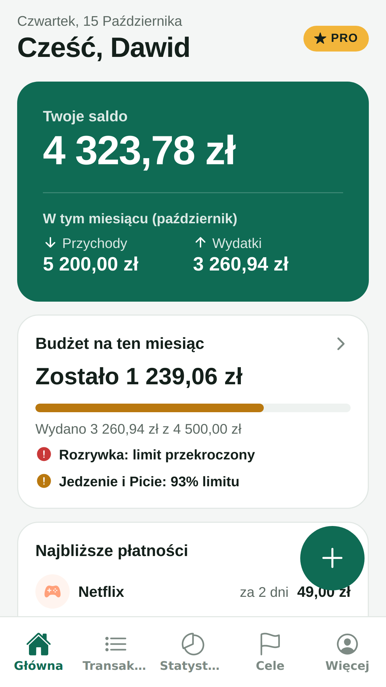
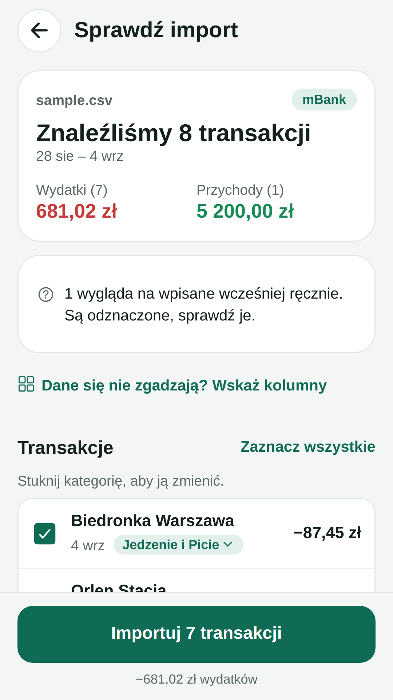
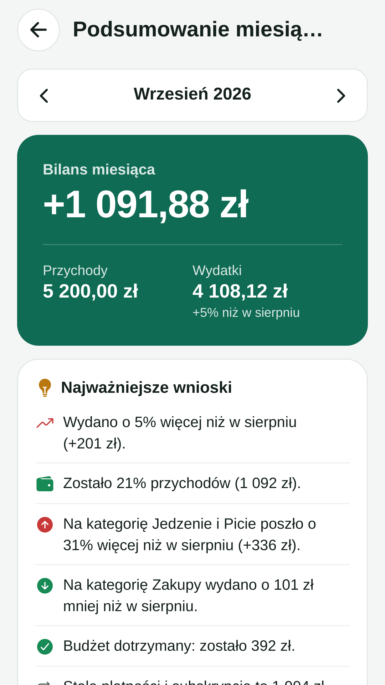

Saldo, budżet i najbliższe płatności
Wgraj plik CSV lub Excel, kategorie dobiorą się same
Netflix, Spotify, czynsz – suma na cały rok
Co wzrosło, co spadło i gdzie odłożyć



Aplikacja na Androida · zapis zajmuje minutę